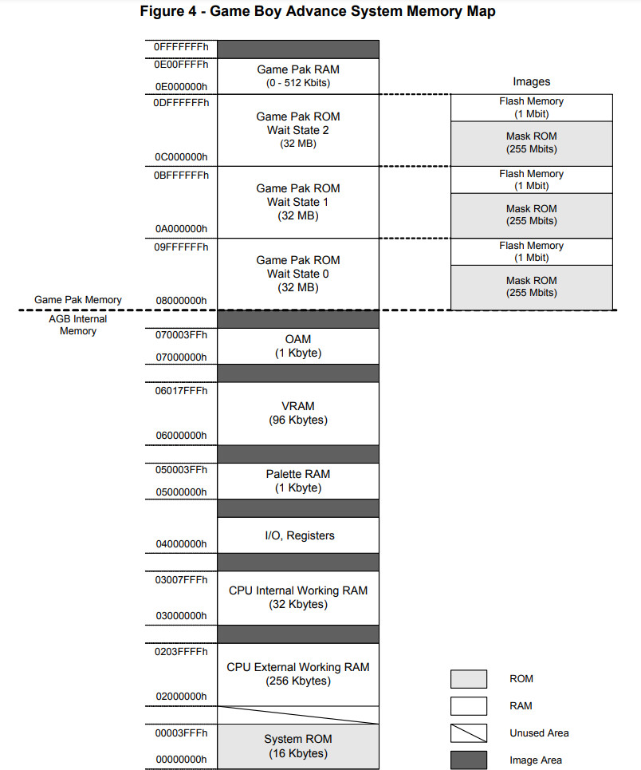

參考資訊：
https://devkitpro.org/index.php
https://patater.com/gbaguy/gbaasm.htm
https://wii.leseratte10.de/devkitPro/
http://www.coranac.com/tonc/text/toc.htm"
https://github.com/devkitPro/devkitarm-crtls
https://gist.github.com/JShorthouse/bfe49cdfad126e9163d9cb30fd3bf3c2
